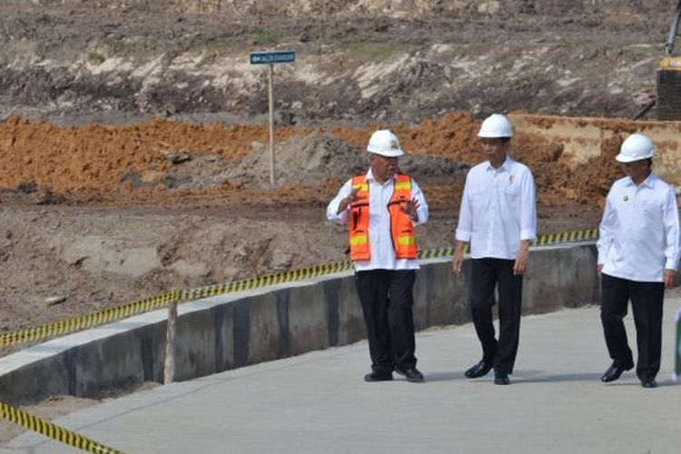

Latar Belakang
 Masa reformasi sendiri merujuk pada periode perubahan besar yang dimulai pada tahun 1998, pasca jatuhnya Orde Baru dan Presiden Soeharto. Masa reformasi ditandai dengan upaya demokratisasi, kebebasan pers, otonomi daerah, dan pemberantasan korupsi.
Masa reformasi sendiri merujuk pada periode perubahan besar yang dimulai pada tahun 1998, pasca jatuhnya Orde Baru dan Presiden Soeharto. Masa reformasi ditandai dengan upaya demokratisasi, kebebasan pers, otonomi daerah, dan pemberantasan korupsi.
Jokowi dianggap sebagai salah satu pemimpin yang lahir dari hasil demokrasi era reformasi. Jokowi, yang mulai menjabat sebagai Presiden Indonesia sejak 2014, membawa sejumlah ciri khas kepemimpinan yang mencerminkan semangat reformasi, seperti:
1. Pemberantasan Korupsi dan Reformasi Birokrasi:
Jokowi mendorong program reformasi birokrasi untuk meningkatkan pelayanan publik dan transparansi. Meski masih menghadapi banyak tantangan, langkah ini mencerminkan semangat perubahan reformasi.
2. Pembangunan Infrastruktur:
Sebagai bagian dari reformasi ekonomi, Jokowi memprioritaskan pembangunan infrastruktur yang merata di seluruh Indonesia untuk mengurangi ketimpangan antarwilayah.
3. Kebebasan Pers dan Demokrasi:
Jokowi memimpin di tengah era di mana kebebasan pers sudah cukup maju, meskipun masih ada kritik terhadap beberapa kebijakan yang dinilai membatasi kebebasan sipil.
4. Penguatan Otonomi Daerah:
Jokowi mendukung otonomi daerah yang menjadi salah satu hasil reformasi untuk memperkuat pembangunan di wilayah.
Namun, di sisi lain, masa kepemimpinannya juga menuai kritik terkait isu-isu reformasi seperti revisi UU KPK dan penanganan hak asasi manusia. Banyak yang menilai bahwa perjuangan reformasi masih jauh dari selesai, meskipun Jokowi berusaha melanjutkan semangat perubahan tersebut.
Tujuan

Joko Widodo (Jokowi) memiliki beberapa tujuan utama selama masa kepemimpinannya, yang mencerminkan visinya untuk membangun Indonesia yang maju, adil, dan sejahtera.
Berikut adalah beberapa tujuan yang ingin dicapai oleh Jokowi:
1. Meningkatkan Kesejahteraan Masyarakat
Pemerataan Ekonomi: Jokowi berupaya mengurangi kesenjangan sosial dan ekonomi antarwilayah, terutama antara Jawa dan luar Jawa.
Pengentasan Kemiskinan: Ia mendorong program-program seperti Kartu Indonesia Sehat (KIS), Kartu Indonesia Pintar (KIP), dan Program Keluarga Harapan (PKH).
2. Pembangunan Infrastruktur
Jokowi menjadikan infrastruktur sebagai prioritas untuk memperkuat konektivitas dan mendukung perekonomian nasional. Proyek seperti pembangunan jalan tol, bandara, pelabuhan, dan transportasi massal (MRT, LRT) menjadi bukti nyata dari visi ini.
3. Transformasi Ekonomi
Penguatan Sektor Industri dan Digitalisasi:
Jokowi mendorong transformasi ekonomi berbasis teknologi dan inovasi untuk meningkatkan daya saing Indonesia di tingkat global.
Kemandirian Energi dan Pangan: Ia menargetkan pengurangan impor bahan pokok melalui peningkatan produktivitas dalam negeri.
4. Peningkatan Peran Indonesia di Kancah Global
Jokowi berupaya menjadikan Indonesia sebagai kekuatan maritim global, sesuai dengan visi Poros Maritim Dunia.
Meningkatkan diplomasi ekonomi dan politik untuk memperkuat posisi Indonesia di organisasi internasional seperti G20 dan ASEAN.
Semua tujuan ini merupakan bagian dari visi besar Jokowi untuk menjadikan Indonesia sebagai negara yang lebih maju, berdaya saing global, dan sejahtera secara merata.
Pelaksanaan
Pelaksanaan tujuan kepemimpinan Joko Widodo (Jokowi) di berbagai bidang mencerminkan visi untuk membangun Indonesia yang lebih maju. Berikut ini adalah evaluasi pelaksanaan kebijakan Jokowi di bidang politik, ekonomi, sosial, budaya, pendidikan, pertahanan, dan keamanan
Bidang Politik
Peningkatan Stabilitas Pemerintahan: Jokowi berhasil menjaga stabilitas politik melalui pendekatan dialogis dan konsolidasi kekuatan politik, termasuk menggandeng oposisi dalam koalisi pemerintahan.
Pemilu Demokratis: Pemilu 2019 berlangsung relatif aman meskipun sempat memanas akibat polarisasi masyarakat.
Kontroversi UU: Revisi UU KPK dan Omnibus Law Cipta Kerja menuai protes dari masyarakat karena dianggap mengancam transparansi dan hak rakyat.
Bidang Ekonomi
Pembangunan Infrastruktur: Proyek besar seperti jalan tol, bandara, pelabuhan, dan transportasi massal (MRT, LRT) berhasil meningkatkan konektivitas.
Transformasi Ekonomi Digital: Jokowi mendorong pengembangan ekonomi digital dengan memfasilitasi UMKM melalui platform digital dan inisiatif startup.
Penanganan COVID-19: Pemulihan ekonomi pasca-pandemi dilakukan dengan bantuan sosial, vaksinasi massal, dan stimulus ekonomi.
Bidang Sosial
Program Bantuan Sosial: PKH, Kartu Indonesia Sehat (KIS), dan Bantuan Langsung Tunai (BLT) membantu kelompok rentan.
Pengentasan Kemiskinan: Penurunan angka kemiskinan terjadi meski perlahan, namun pandemi sempat memukul capaian ini.
Isu Kesetaraan Gender: Jokowi mendukung pemberdayaan perempuan dan kesetaraan gender, terutama melalui peran wanita di kabinet.
Bidang Budaya
Pelestarian Warisan Budaya: Peningkatan promosi budaya Indonesia di kancah global, termasuk melalui festival budaya dan pariwisata.
Revitalisasi Pariwisata: Jokowi memperkenalkan program 10 Bali Baru untuk mendiversifikasi sektor pariwisata, seperti Danau Toba dan Labuan Bajo.
Bidang Pendidikan
Peningkatan Akses Pendidikan: Melalui Kartu Indonesia Pintar (KIP) dan perluasan sekolah di daerah terpencil.
Peningkatan Keterampilan Kerja: Program Kartu Prakerja fokus pada pelatihan keterampilan untuk angkatan kerja.
Digitalisasi Pendidikan: Dorongan pada pembelajaran daring meskipun infrastruktur internet di beberapa daerah belum memadai.
Bidang Pertahanan
Modernisasi Alutsista: Pemerintah meningkatkan anggaran pertahanan untuk modernisasi alutsista, termasuk pengadaan pesawat tempur dan kapal perang.
Keamanan Maritim: Jokowi menegaskan komitmen terhadap kedaulatan wilayah maritim Indonesia, seperti di Natuna.
Poros Maritim Dunia: Fokus pada penguatan peran Indonesia sebagai kekuatan maritim global.
Bidang Keamanan
Pemberantasan Terorisme: Jokowi mendukung operasi antiterorisme melalui Densus 88 dan kerja sama internasional.
Penanganan Konflik Papua: Pemerintah membangun infrastruktur di Papua untuk meredakan ketegangan, meskipun pendekatan keamanan sering dikritik.
Kesiapan Penanganan Bencana: Pemerintah meningkatkan kapasitas mitigasi bencana, meskipun respons terhadap beberapa bencana masih dinilai lambat.
Kelebihan
- Jokowi berhasil mempercepat pembangunan infrastruktur, termasuk jalan tol, bandara, pelabuhan, bendungan, dan transportasi massal seperti MRT dan LRT. Hal ini memperbaiki konektivitas antarwilayah dan mendukung pemerataan ekonomi.
- Jokowi mendorong ekonomi digital dengan mendukung UMKM untuk masuk ke platform digital, memperluas jaringan internet melalui Palapa Ring, dan memfasilitasi perkembangan startup.
Kekurangan
- Kebijakan ekonomi yang mendorong investasi sering dianggap mengorbankan lingkungan, seperti ekspansi tambang dan deforestasi akibat proyek pembangunan.
- Beberapa kebijakan, seperti pengesahan Omnibus Law Cipta Kerja, dianggap kurang melibatkan partisipasi publik secara luas.